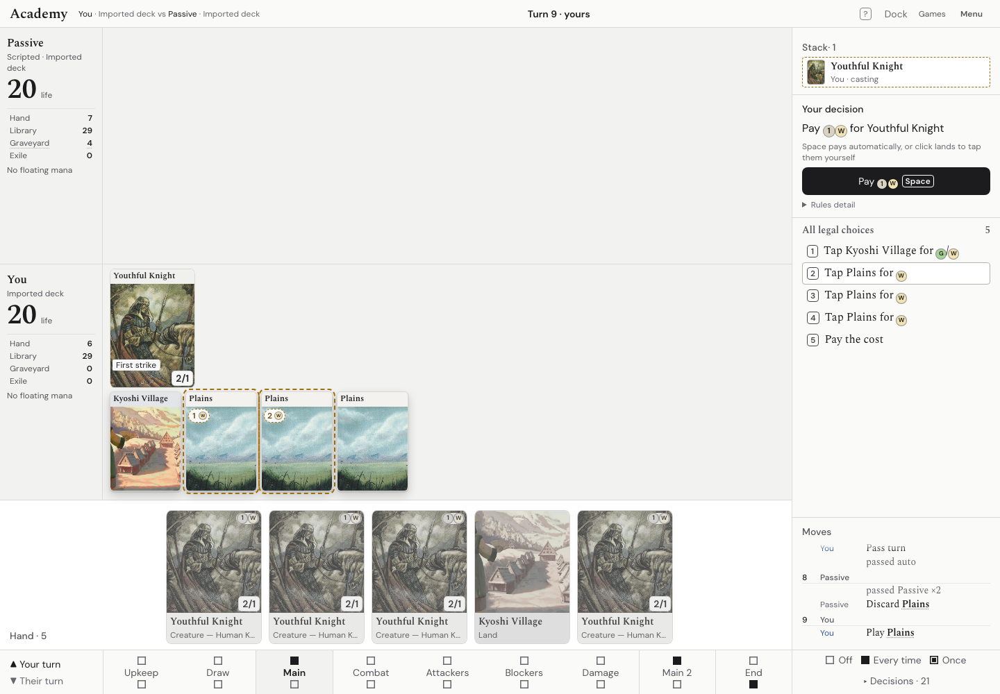
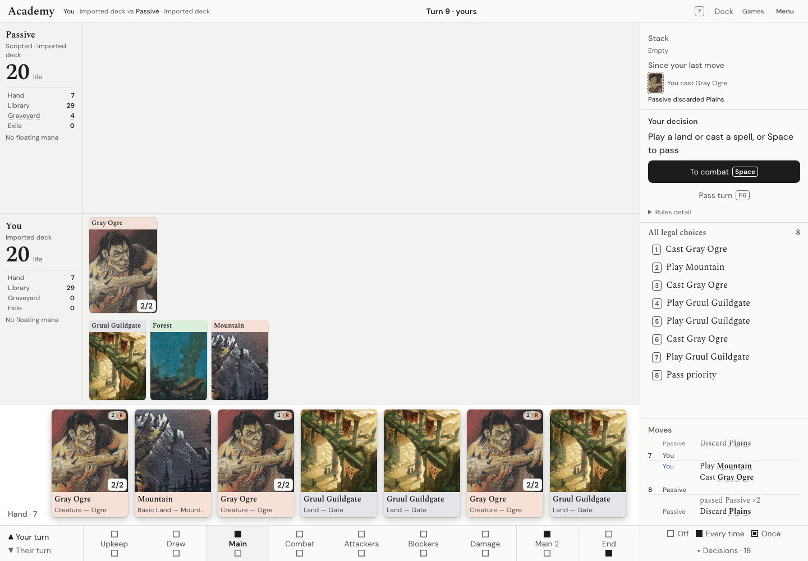

Release extension rebuilt at 4f7a01caa0 and the static SPA rebuilt (the earlier build predated the
Choose the mana to add fix). Each game ran in a configured launch (managym academy play --opponent passive --seed 11)
with imported decks. A headless Chromium driver clicked only [data-testid=action-option] offers.
Academy uses manual mana payment by default.
Deck 14 Kyoshi Village / 10 Plains / 16 Youthful Knight against 40 Plains. With two lands, the driver played the
Plains and cast the Knight on the same turn. The next decision was ordinary priority, and the Moves log shows no tap entries.
This is the case the previous QA flagged as its worst finding. The driver played the 4th land (a Plains) and cast the Knight on the same turn. The stop offered exactly Tap Kyoshi Village for {G}/{W}, three Tap Plains for {W} and Pay the cost. The payment preview highlights two Plains, so the default leaves the Village untapped. Clicking the Village tap finished the payment directly: in 11 payments over one game there was no color modal and no second stop.

The same check through the Academy GameSession (a real seeded game played by offer labels, with no scenario helpers):
CAST turn 7 lands: Village, Plains, Plains, Plains (last entered_this_turn)
STOP PAY_OR_NOT ['Tap Kyoshi Village for {G}/{W}', 'Tap Plains for {W}' ×3, 'Pay the cost']
DONE tapped: ['Kyoshi Village', 'Plains'] (stale-land variant, turn 9: identical)
Deck 14 Gruul Guildgate / 6 Mountain / 6 Forest / 14 Gray Ogre. This covers the plan's "either color pays" row, which the previous QA did not reach in the browser.
The Mountain was played and the Ogre cast on the same turn. The Moves log reads Play Mountain · Cast Gray Ogre with no payment stop.

With four sources for three mana, the stop offers both Guildgate taps, the Forest, the Mountain and Pay the cost. The basics are now shown beside the Guildgates. Tapping a Guildgate asks Choose the mana to add (Add {R} / Add {G}). After {R}, the payment stops again at Pay {2} with {R} from Gruul Guildgate committed. Then Pay the cost taps exactly two lands.


pytest tests/academy/test_dual_land_payment.py tests/academy/test_payment_preview.py tests/env/test_skip_forced_decisions.py: 12 passed.cargo nextest run --profile ci -E 'binary(source_taps)' in debug: 32 passed.Debug source_taps: 32 passed, including ward_treats_simple_choice_sources_like_fixed_sources_and_keeps_treasure.
Not reached in the browser: resolution payments (Ward, TurnFaceUp) and the Soulstone Sanctuary manland case.
Neither occurs in a short imported-deck game. Both are covered by source_taps engine tests.